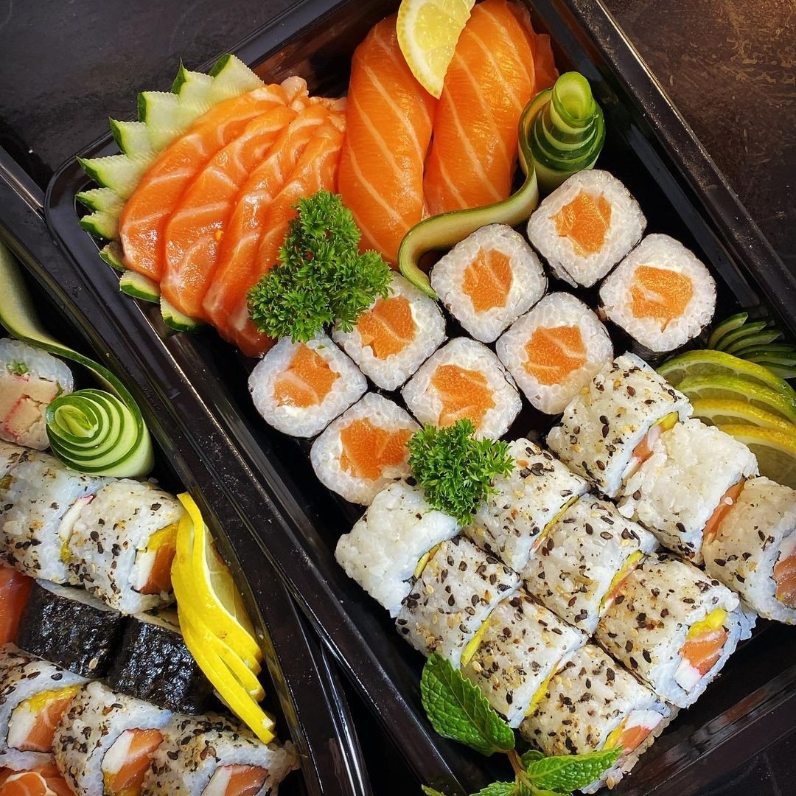
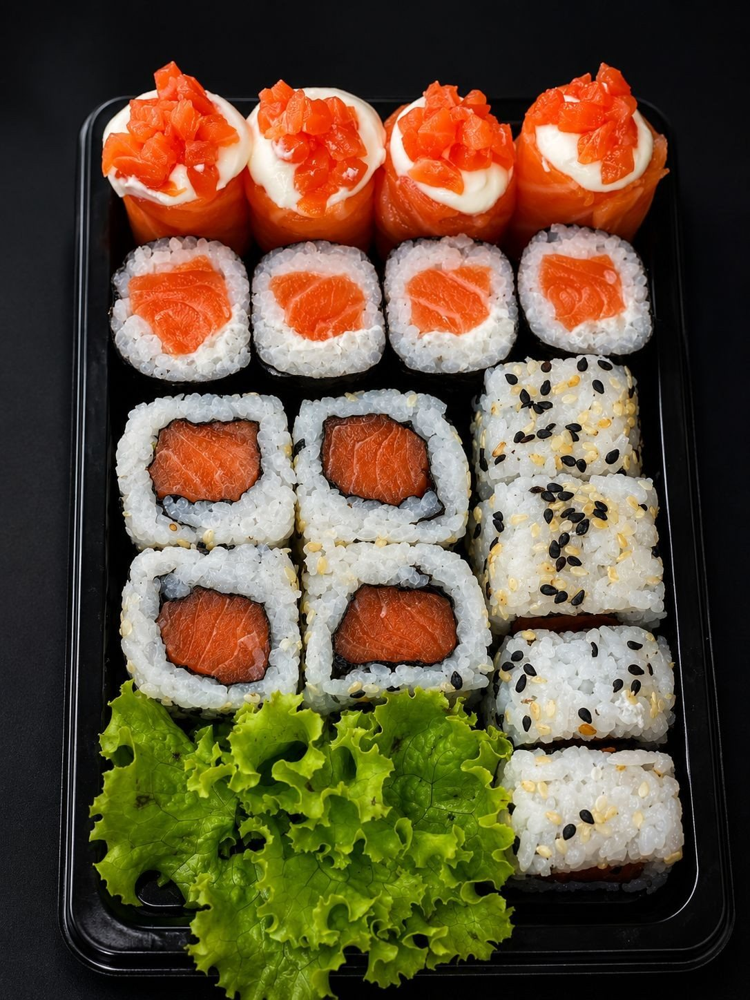

16peças
Mix Cru & Frito
- 4 Maki salmão
- 4 Joy Califórnia
- 8 Hot
R$ 44,90
Delivery das 18h às 22h
Combinados de 16 a 50 peças, a linha só salmão, temakis e o Sushi Dog. Delivery para Boca do Rio, Imbuí, Pituaçu, Stiep e região, de quarta a segunda.

Por onde começar
Combinados, temakis, hots, uramakis, sushi especial, bebidas e molhos, com busca.
Abrir o cardápioPedidoToque em “Adicionar”: a sacola soma e a mensagem sai pronta para o WhatsApp.
Montar agoraSó salmãoCombinados 100% salmão, sashimi, niguiri e joy.
Ver a linhaEntregaDa Boca do Rio ao Cabula IV, das 18h às 22h.
Ver os bairrosContador de peças
Cada combinado com a conta aberta, do jeito que a casa publica: quanto é cru, quanto é hot, quanto leva kani e manga. Escolha pelo tamanho da fome.


Todos os combinados, inclusive os executivos com refrigerante


Combinados nobres · só salmão
“Para os verdadeiros apaixonados por salmão. Peças selecionadas, cortes nobres e o máximo de frescor em cada combinação.”Cardápio do Lu' SushiSashimi, niguiri e joy avulsos →
Sushi Dog
“Crocância, frescor e uma explosão de sabor.”Cardápio do Lu' Sushi
Arroz e alga enrolados, empanados na farinha e na panko e fritos, com recheio generoso, cebola roxa e cream cheese. Vem com teriyaki e shoyu.
Destaques do cardápio
Hossomaki de salmão, uramaki Califórnia, hot de salmão e joy Califórnia. Serve 2. R$ 69,90
160 g de arroz temperado, salmão, cream cheese e gergelim, com teriyaki e shoyu. R$ 39,99
Kani, pepino e manga, envoltos em arroz e gergelim. R$ 14,99
Quem já pediu
O arroz estava no ponto (…) e o tempero na medida certa. Veio tudo certinho bem embalado.
Excelente atendimento, entrega super rápida... Foi uma ótima escolha para a minha primeira experiência com comida japonesa tava tudo muito delicioso.
Ótima qualidade, sem demora na entrega! Uma delícia e viciante. Super indico
Equipe super atenciosa, tive o grande prazer de conhecer o sushyman e o cara é muito bom no que faz, produtos maravilhosos.
Atendimento muito bom, comida maravilhosa ❤️👏🏿 Super indico 😍
Avaliações reais da ficha do Google (“Sushi do lu - Restaurante Japonês Delivery”), lidas em 07/10/2026. Nomes abreviados.
Fotos da casa
Monte seu pedido
Os combinados lá em cima e os itens ao lado entram na mesma sacola. Escolha o bairro e envie: a mensagem chega no WhatsApp do Lu' Sushi já organizada, sem comissão de aplicativo.
Entregar em
Pedido mínimo: R$ 30,00.
Para completar a bandeja
Onde entrega
Áreas de entrega do cardápio digital da casa (07/10/2026). Taxa por bairro: confirme pelo WhatsApp.
Horário do delivery
R. Cristóvão Ferreira, 17 · Boca do Rio, Salvador · BA · 41710-030
Entrega, horário e pedido mínimoPerguntas
Das 18h às 22h, de quarta a segunda. Às terças a casa fecha.
Boca do Rio, Pituaçu, Imbuí, Stiep, Narandiba, Doron, Cabula IV, Armação e Jardim Armação, segundo o cardápio digital da casa.
Sim, R$ 30,00. A sacola desta página avisa quanto falta.
A taxa por bairro e as formas de pagamento não estão publicadas: a casa confirma pelo WhatsApp.
Vêm com hashi, shoyu e teriyaki na quantidade descrita em cada combinado. Molho extra sai a R$ 0,99 o sachê.
Não há salão nem reserva divulgados: o Lu' Sushi trabalha com delivery.
Hoje tem sushi?
Delivery de quarta a segunda, das 18h às 22h, para nove bairros. Pedido mínimo de R$ 30.